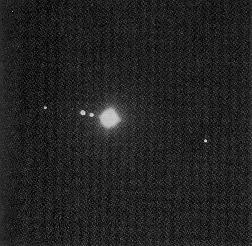

|
 |
|
| ||||
Galileo Galilei Galileo Galilei (1564-1642) was an Italian astronomer who was the first to use the newly invented telescope to study celestial objects. He was the first to see lunar mountains and sunspots, and the first to see Saturn's rings (although his telescope was not good enough to clearly show them as rings). He also discovered the fact that the planet Venus shows distinct "phases" much like the Moon, indicating that Venus must orbit the Sun just as the Moon orbits the Earth.
 A view of Jupiter and its moons, seen through a small telescope. Perhaps Galileo's most famous discovery came when he pointed his telescope at Jupiter. Aside from seeing the disk of the planet, he also saw four dots of light accompanying it. Over the course of a few nights, these dots changed position with respect to Jupiter, which Galileo recognized to mean that they were moons orbiting the giant planet.

Galileo's sketch of the changing positions of the moons from night to night. Galileo's discoveries were very controversial, as they indicated that the Earth was not the center of the Universe: Venus orbited the Sun, small moons orbited Jupiter, and thus, he argued, it was more natural to believe that the Earth itself orbited the Sun. These views conflicted with the teachings of the Catholic Church; the Church forced Galileo to recant his views and placed him under house arrest for life. Only in 1992 did the Church admit its condemnation of Galileo was in error...
But armed with Galileo's discoveries, and shortly thereafter with the work of Isaac Newton on the theory of gravity, the stage was set for a more complete understanding of the laws of planetary motion advanced by Johannes Kepler.
|
|